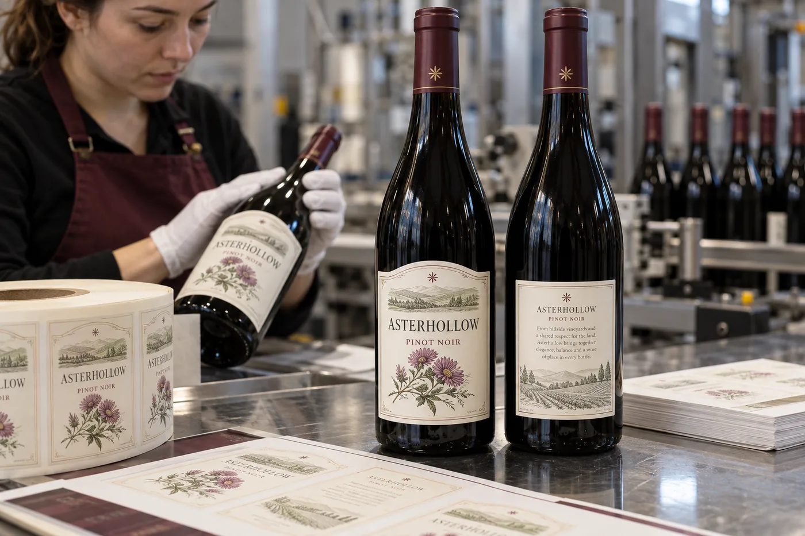
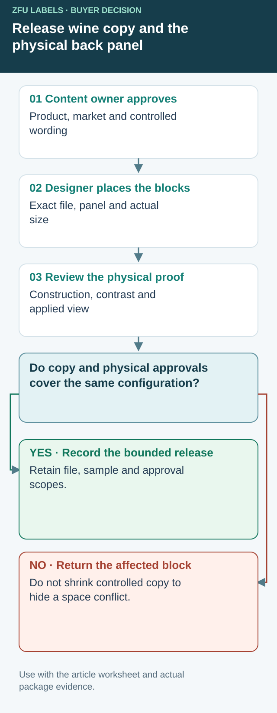

Release a wine back panel by copy block and physical proof
An approved text document does not establish that its contents remain readable after placement on the final bottle. A physical proof does not establish that the words were authorized for that wine and market. Keep those decisions connected without asking the converter to take over the winery's or importer's regulatory responsibility.


Create one register for the actual front/back configuration. Identify the designated brand-label plan and every controlled block, including statements placed elsewhere on the container. The examples below are coordination fields, not a complete list of mandatory wine statements.
| Back-panel review | Reference to retain | Decision still needed |
|---|---|---|
| Controlled wording | Approved copy source, revision, product and market | Named content owner confirms applicability |
| Importer/bottler details | Authorized wording and responsible party | Unconfirmed identity stays open |
| Warning block | Current approved block and placement instruction | Reviewer checks applicable presentation rules |
| Artwork placement | Exact PDF, component, scale and copy comparison | Changes referred to the affected owner |
| Printed appearance | Construction, finish and actual-size sample | Contrast and readability scope identified |
| Applied reading view | Bottle reference, panel and seam relationship | Accepted physical configuration recorded |
TTB's health-warning page includes separation, contrast and container-dependent presentation requirements. A generic instruction to make all small text the same size is therefore a poor release method. Have the responsible reviewer supply the applicable constraints; this register does not determine them.
A smaller panel should reopen the affected decision
Suppose a hypothetical importer accepts a narrower bottle after copy approval. The designer compresses the back layout to retain the story paragraph. Do not classify that change as harmless because the words are unchanged. Ask which type, spacing, contrast and placement decisions need renewed review on the actual-size layout. Reducing optional story copy or changing the proposed panel may be preferable to squeezing controlled information.
Mark each approval's scope: wording, layout, printed appearance or applied fit. If only the importer statement remains unresolved, identify the components that depend on it and keep their production release open. An approval signature without a referenced file and scope leaves the same ambiguity for the next reorder.
Retain a representative applied reference with the accepted document set. Record when a later change to bottle, stock, finish or copy should return to the relevant owner. A decorative bottle photograph cannot substitute for this evidence. Use the mini-bottle allocation guide when space must be redistributed, and the vintage stock guide when the remaining physical rolls need disposition. Neither closes the back panel's copy-to-physical-proof gap by itself.
Back-label space is not leftover space
I understand the temptation to finish the front label first and squeeze every other line onto the back. In a U.S. wine project, that sequence can create costly artwork rounds. The back may carry mandatory statements, importer or bottler information, barcode and brand story. Each has a different owner and approval path.
TTB's Anatomy of a Wine Label separates information required on the designated brand label from information that may appear on any label. Use its current wine-labeling resources for the full applicable rules. This is a layout guide, not legal advice or a substitute for COLA review.
Two wine buyers, different bottlenecks
Imagine a composite domestic winery changing its bottle while keeping a familiar front design. The new back panel is slightly narrower. I would ask the regulatory owner for approved copy before reducing type size or deleting a line. A modestly taller back label may cost less than an unapproved compromise.
Now imagine a composite importer preparing a new U.S. release. The foreign producer supplies a polished back story, but the U.S. importer statement has not been confirmed. TTB details the name-and-address requirements for imported wine. I would reserve a clear block and wait for approved wording rather than inventing a line to make the mockup look finished.
Build the proof in layers
Start with a real bottle and mark the smooth back panel, glass seam and label boundaries. Next place the approved regulated statements, including the health warning where applicable. TTB says the government warning must be separate and legible. Add optional story copy, illustrations and barcode only after the mandatory blocks fit. The brand owns the accuracy of origin, vintage, alcohol and sulfite statements.
| Proof layer | Approval owner |
|---|---|
| Bottle and back-panel fit | Bottler and label converter |
| Mandatory wording and claims | Winery or importer regulatory reviewer |
| Barcode data | Brand and retail partner |
| Artwork, color and finish | Brand and printer |
| Applied-bottle trial | Bottler and brand |
Make the proof check physical
Print at actual size on the intended face, then apply to a filled-condition bottle. Inspect contrast under normal light, not only on a bright monitor. Check after handling or ice-bucket exposure if that is part of the sales setting. The Asterhollow image is fictional artwork; its small back text is not a compliant label template and must not be copied as regulated wording.
Our buying view
Charge for the right revision, not another rushed print
I would rather hold a quote for approved copy than print a roll that later needs a sticker over the importer line. Regulatory owners decide what is required; the converter should make that content readable and reproducible on the chosen bottle.
Send a complete wine back-label brief
- Target U.S. market and designated brand-label plan.
- Regulatory-approved text and named approval owner.
- Actual bottles, back-panel dimensions and application method.
- Barcode artwork supplied by the brand.
- Finish, chilling conditions and applied-bottle proof criteria.
For wet use, compare ice-bucket wine materials. For bottleneck fit, see embossed-glass wine labels.
Frequently asked questions
Must all mandatory U.S. wine information be on the back?
No. TTB distinguishes content required on the designated brand label from content allowed on any label. Review the whole container and current rules.
Can a printer approve the legal wording?
The winery or importer and its qualified reviewer must approve the regulatory copy and claims. The printer can proof the supplied text, position and print quality.
Can the importer line be added late?
Late changes may affect spacing and approvals. Request the actual importer statement early, then follow the applicable TTB review process.
Related buyer guides
Send the unresolved specification question
Include actual bottle and back-panel reference, approved-copy status and revision, target market, quantity and the unresolved approval owner.
Prepare a label specification inquiry. The contact form opens an email draft; review it and use the listed email or WhatsApp route for attachments. Available construction, sample scope, pricing and timing require confirmation for the actual job.